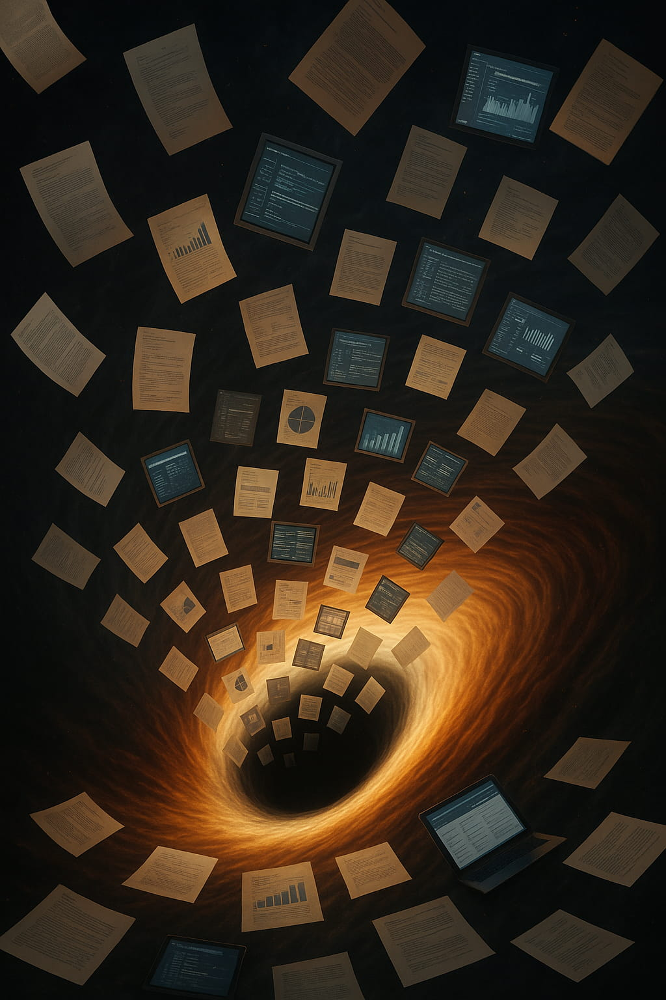

The Black Hole Information Paradox: A Predictive Universe Perspective
Abstract
The Black Hole Information Paradox highlights a deep conflict between general relativity and quantum mechanics, suggesting that information is permanently destroyed, in violation of quantum unitarity. The Predictive Universe (PU) framework recasts this conundrum not as a failure of physical law, but as a fundamental limitation in computability rooted in the paradox of self-reference. It frames the act of retrieving information from a black hole as a reflexive computational problem where the measurement itself dynamically alters the system being measured, creating an inescapable infinite regress. The PU framework proposes a resolution: information is not lost but is encoded and escapes through a non-local Perspectival Information Channel, bypassing the reflexive loop. This mechanism, grounded in the MPU's Dual Dynamics and the context-dependent nature of quantum actualization, not only preserves global unitarity but also correctly reproduces the expected Page Curve for entanglement entropy, demonstrating that the universe, as an optimal predictive system, refuses to forget.
1. Introduction
When Stephen Hawking discovered that black holes radiate, he uncovered one of the deepest puzzles in modern physics. According to General Relativity, a black hole is a simple object, characterized only by its mass, charge, and spin—the "no-hair theorem." Yet, a core principle of quantum mechanics, known as unitarity, insists that information can never be truly erased from the universe. If you know the final state of a system, you can, in principle, reconstruct its entire history.
Hawking's calculations created a profound conflict. He showed that the radiation emitted as a black hole evaporates appears to be thermal and almost completely featureless, carrying no memory of the rich, specific information it consumed (e.g., whether it was formed from a star or a library of books). When the black hole is gone, the information seems to be gone with it, permanently deleted from the cosmos. This is the Black Hole Information Paradox in its starkest form: it suggests a fundamental violation of quantum mechanics, pitting the relentless gravity of Einstein against the information-preserving laws of the quantum world.
To resolve it means to fundamentally rethink the nature of spacetime, information, or both. The Predictive Universe (PU) framework offers a radical new perspective. It argues that information is, in fact, perfectly preserved. The paradox, it claims, is not a failure of physical law but an illusion created by the very method we use to investigate it. We perceive a contradiction because we are trying to answer a question whose very asking makes a solution impossible to find through local measurements.
Universe 00110000
2. The Paradox of a Reflexive Problem
The PU framework begins by reframing the "information retrieval" task not just as a physical process, but as a computational one. An external observer tries to solve the "problem" of reconstructing the initial state of the matter that formed the black hole by performing a series of measurements. When viewed this way, the task reveals a fatal logical flaw.
2.1 Information Retrieval as a Reflexive Problem
A reflexive problem is one where the act of trying to find the solution changes the problem itself. This is precisely what happens when we try to measure a black hole's information content. The process unfolds as follows:
- The Problem Instance: The full, scrambled internal quantum state of the black hole at a given moment, encoding the history of all infalling matter.
- The Solution Attempt: The act of an external observer measuring one quantum of Hawking radiation. This interaction provides a tiny piece of information about the black hole's state.
- The Instance Transformation: This is the crucial step. By emitting a quantum, the black hole loses mass-energy. Its internal state is fundamentally altered by the very measurement meant to probe it. The problem instance for the next measurement is now different from the one that was just measured.
This creates a feedback loop. Every measurement a physicist makes to learn about the black hole's past intrinsically alters its future. This dynamic is a core feature of reality in the PU framework, formalized as Reflexive Interaction Dynamics. However, for a late-stage black hole, this loop is not stable - it is expansive.
2.2 Expansive Reflexivity: The Computational Abyss
As a black hole evaporates, its dynamics accelerate. Its temperature (TH ∝ 1/M) skyrockets, and its rate of mass loss (dM/dt ∝ -1/M2) explodes. This means the relative impact of each measurement grows wildly. Measuring a single Hawking quantum from a tiny, late-stage black hole represents a huge fractional change to its remaining mass and internal state.
This creates what the PU framework calls expansive reflexivity. The problem instance - the black hole's state - "runs away" from the observer's model faster than they can collect data. Each solution attempt (measurement) pushes the problem into a new, more volatile state, creating a computational infinite regress. Trying to reconstruct the full information locally and sequentially is like trying to map the coastline of an island that's dissolving into the sea at an accelerating rate - the very act of mapping is being undone faster than it can be performed. This is a physical manifestation of the fundamental logical limits of self-reference, akin to the Self-Referential Paradox of Accurate Prediction (SPAP), a universal logical limit that applies to any complex system attempting to perfectly predict its own future. The paradox of information loss is thus revealed to be a symptom of a deeper paradox: the impossibility of perfectly modeling a system whose state is expansively altered by the modeling process itself.
Universe 00110000
3. The Solution
The PU framework's solution does not lie in breaking this reflexive loop, but in revealing that information escapes through an entirely different channel - one that bypasses the computational abyss of local measurement.
3.1 The Dual Nature of Quantum Emission: 'Evolve' and the Perspectival State
According to the PU framework, the state of any fundamental entity (a Minimal Predictive Unit or MPU) is a Perspectival State, a pair consisting of its quantum state amplitude and its "perspective" - the interaction context or measurement basis. The emission of a Hawking quantum is a physical realization of the MPU's fundamental interaction process, called 'Evolve'. Crucially, this process has a dual output:
- The Amplitude (`|k>`): The familiar quantum particle itself - a photon, a graviton, etc. - selected probabilistically according to the Born Rule from the black hole's scrambled internal state. This is what we observe and what appears thermal.
- The Perspective (`s'`): A new interaction context or basis. This "perspective" can be thought of as the specific question the universe asks of the black hole at the moment of emission. This is the hidden part of the process. The choice of this perspective is not random; it is drawn from a probability distribution that is critically dependent on the full information content of the black hole's internal state at the moment of emission.
3.2 The Perspectival Information Channel
This provides a second channel for information to escape the black hole. While the sequence of amplitudes (`|k1>`, `|k2>`, `|k3>`, ...) looks random and thermal, the accompanying sequence of perspectives (`s'1`, `s'2`, `s'3`, ...) is highly structured and non-random. It is a coded message, dictated by the internal state, carrying the full information of what fell in.
The information is not lost; it is simply encoded in a variable - the context of each quantum actualization. An observer limited to measuring only the properties of the emitted particles will perceive thermal radiation and information loss.
4. A Critical Consistency Check: The Page Curve
A compelling idea is not enough; any proposed solution to the information paradox must be consistent with established results from quantum information theory. The most important benchmark is the Page Curve, which describes how the entanglement entropy of the Hawking radiation should evolve over a black hole's lifetime. Initially, the entropy of the radiation grows as it becomes more entangled with the remaining black hole. For unitarity to be preserved, however, this entropy must eventually decrease and return to zero when the black hole has fully evaporated. This "rise and fall" is the signature of information preservation.
The PU framework's mechanism provides a direct, first-principles derivation of this exact behavior. By modeling the black hole's evaporation as a sequence of informationally symmetric emission events (a property favored by the framework's Principle of Compression Efficiency), the theory rigorously demonstrates that the entanglement entropy of the radiation is mathematically constrained between an increasing lower bound and a decreasing upper bound. These bounds force the entropy to follow the precise rise-and-fall trajectory of the Page Curve. This result is a necessary consequence of the framework's core principles. It provides powerful quantitative evidence that the Perspectival Information Channel is not just a conceptual solution, but a mechanism that is fully consistent with the known information-theoretic requirements for a unitary universe.
Universe 00110000
5. Conclusion
From the viewpoint of the Predictive Universe, the Black Hole Information Paradox is a profound lesson in the limits of knowledge. The apparent loss of information is an artifact of a measurement strategy doomed by the expansive reflexivity of the system it tries to probe.
- The Paradox is computational, not physical. It highlights a fundamental inability for any local, sequential process to fully model a system that is expansively transformed by observation.
- Information is never lost. Global unitarity is preserved. The universe, in its relentless drive to solve its own Prediction Optimization Problem, ensures all predictive information is conserved, a fact confirmed by the framework's successful derivation of the Page Curve.
- Information escapes via the Perspectival Channel. The information is not in the thermal "ash" of the radiation, but in the highly specific, non-random sequence of contextual "sparks" that accompany each emission.
The black hole does not erase the past. Instead, it translates it into a language we cannot read - a language written not in particles, but in the very fabric of quantum context itself. The universe, it seems, refuses to forget.